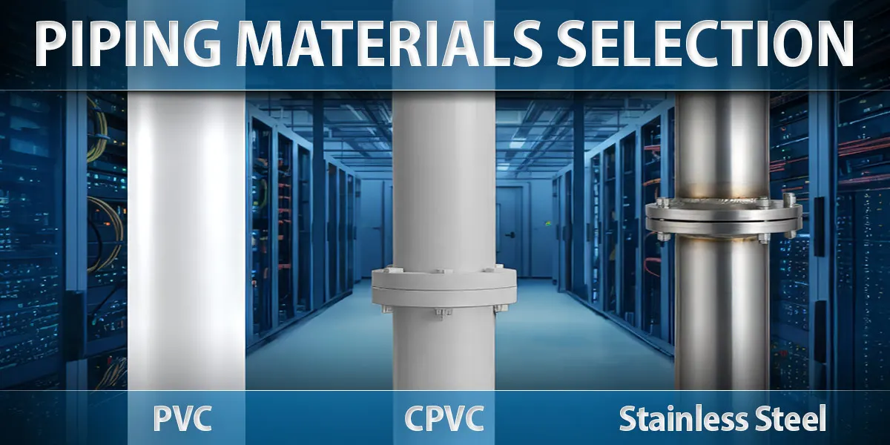

Piping material selection for data center environments
PVC, CPVC, and stainless compared for cooling loops: temperature, pressure, cost, and service life.

Data centers rely on precision, performance, and reliability, and the piping materials that move cooling fluids through these systems play a vital role in all three. Selecting the right material isn't just about temperature or flow rate. It directly impacts uptime, energy efficiency, and long-term maintenance costs.
This guide breaks down the most common materials used in data center cooling systems, compares their strengths, and explains how Harrington's design team helps facilities engineer piping networks built for performance and longevity.
Common piping materials for data centers
Not all piping is created equal. In high-stakes environments where every degree of temperature and every minute of uptime matters, the right choice of material can make the difference between consistent operation and costly downtime.
1. PVC (polyvinyl chloride)
PVC is one of the most widely used materials in industrial and mechanical systems. It offers strong corrosion resistance and smooth internal surfaces that minimize frictional losses, which is ideal for chilled water systems.
Advantages: excellent chemical and corrosion resistance, lightweight and easy to install, cost-effective compared to metal alternatives.
Limitations: lower temperature and pressure tolerance than CPVC or stainless steel. Not suitable for applications above 140°F.
Best use case: secondary cooling loops, non-critical chilled water distribution, and low-temperature systems where cost efficiency matters.
2. CPVC (chlorinated polyvinyl chloride)
CPVC provides many of the same benefits as PVC but performs better in environments with higher temperatures and pressure.
Advantages: handles fluid temperatures up to 200°F, strong chemical resistance and low thermal conductivity, lower material cost than metal piping. Provides long, reliable system performance when installed with the approved CPVC cements and primers and properly supported.
Limitations: slightly higher cost than PVC. Requires careful handling during installation to prevent stress cracking.
Best use case: primary cooling loops, heat exchanger lines, and systems where both temperature and reliability are critical.
3. Stainless steel
Stainless steel remains a go-to choice for facilities prioritizing strength and long-term durability. It's commonly used in mission-critical systems or where regulatory and safety standards require metal piping.
Advantages: high pressure and temperature tolerance, excellent mechanical strength, long service life and minimal expansion or contraction.
Limitations: expensive materials and installation. Can corrode under certain untreated water chemistries.
Best use case: main distribution lines, high-temperature applications, or systems requiring additional safety or structural integrity, often integrated with engineered plastic components for hybrid performance.
Piping material comparison
| Property | PVC | CPVC | Stainless steel |
|---|---|---|---|
| Temperature range | Up to 140°F | Up to 200°F | 300°F+ |
| Pressure rating | Up to 150 psi | Up to 200 psi | 300+ psi |
| Corrosion resistance | Excellent | Excellent | Good (depends on fluid chemistry) |
| Cost | Low | Moderate | High |
| Installation ease | Easy | Easy | Difficult |
| Service life | 15 to 25 years | 20 to 30 years | 30+ years |
| Maintenance needs | Minimal | Minimal | Moderate |
This table illustrates why CPVC often represents the ideal middle ground for most modern data centers, balancing durability, corrosion resistance, and affordability.
Energy and maintenance impacts
Energy efficiency doesn't start with servers or HVAC units. It begins with the materials that move coolant throughout the facility. Poorly selected piping leads to increased frictional loss and pump energy usage, heat transfer inefficiency, and unexpected downtime due to corrosion or leaks.
PVC and CPVC offer excellent insulation properties that reduce energy loss compared to metal pipes, while stainless steel is better for systems exposed to frequent thermal cycling or high pressure. Chosen well, the material directly improves operational costs, system reliability, and maintenance scheduling.
How Harrington helps with material selection
Every data center project begins with understanding system loads, cooling loop design, and long-term performance requirements. Harrington's engineering and supply experts collaborate with contractors and facility teams to evaluate flow rate and heat load dynamics, pressure and temperature thresholds, material compatibility with specific cooling fluids, and the installation environment.
Whether your facility needs CPVC chilled water systems or hybrid metal-plastic piping networks, our team delivers complete data center infrastructure solutions built for efficiency, reliability, and scale.
Questions about your line? A specialist answers the phone around the clock.
Back to articles